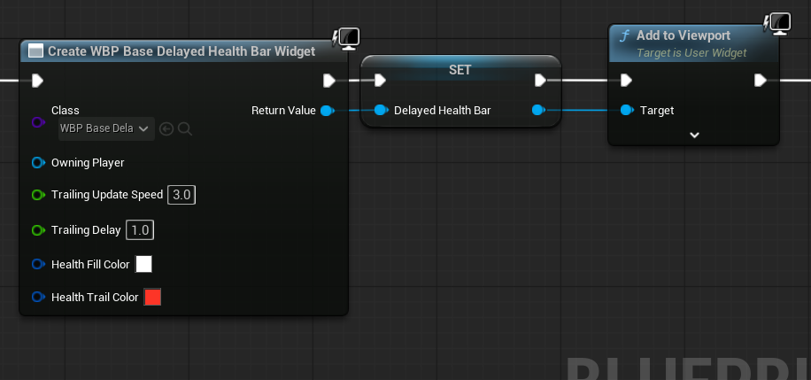
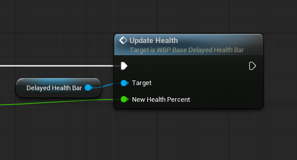

Customizable Delayed Health Bar (UE5)
A customizable, event-driven health bar with a trailing effect.
🎮 Features
- Instant + Delayed Feedback – main bar updates immediately, trailing bar animates smoothly.
- Customizable – colors, speed
- Optimized – event-driven, no Tick required.
- Plug & Play – works in any project type, Blueprint-only.
🚀 Quick Setup
- Use the Create Widget Node and select WBP_BaseDelayedHealthBar
- Set custom colors and trailing speed
- Set it as a variable and add to view port
- 
- Connect it to your health system:
- Call UpdateHealth whenever health changes.
- Example:
- On damage → UpdateHealth(NewHealthPercent).
- 
- (note that a percentage is expected. Calculate health with something like Health / MaxHealth after damage is taken.
🎮 Demo Level
- A sample level is included.
- Press Space to simulate taking damage.
- Watch the bar update instantly + trail down smoothly.
⚙️ Variables
Name | Use |
TrailingupdateSpeed
Trailing Delay | Speed of trailing animation.
Delay before trail states. |
HealthFillColor | Color of instant health bar. |
HealthTrailColor | Color of trailing bar. |
|
|
|
|
📌 Notes
- Tested in UE5.6.
- Blueprint only, no C++ required.
- Great for RPGs, Soulslikes, Shooters, etc.
🙌 Support
For help or feedback, see the FAB page or contact:
denno.dev on Instagram